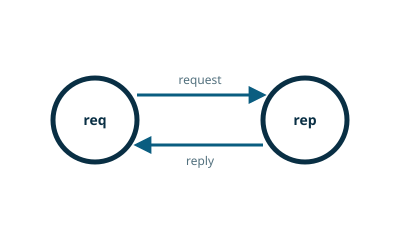

NNG pattern guide

Request/Reply (I ask, you answer)
Request/Reply is used for synchronous communications where each question is responded with a single answer, for example remote procedure calls (RPCs). Like Pipeline, it also can perform load-balancing. This is the only reliable messaging pattern in the suite, as it automatically will retry if a request is not matched with a response.
reqprep.c
#include <stdlib.h>
#include <stdio.h>
#include <string.h>
#include <time.h>
#include <nng/nng.h>
static int
nng_recv_alloc_(nng_socket sock, void **buf, size_t *size)
{
nng_msg *msg = NULL;
int rv;
if ((rv = nng_recvmsg(sock, &msg, 0)) != 0) return rv;
*size = nng_msg_len(msg);
if ((*buf = nng_alloc(*size)) == NULL) { nng_msg_free(msg); return NNG_ENOMEM; }
memcpy(*buf, nng_msg_body(msg), *size);
nng_msg_free(msg);
return 0;
}
#define nng_recv_alloc(sock, buf, size) nng_recv_alloc_((sock), (void **)(buf), (size))
#define NODE0 "node0"
#define NODE1 "node1"
#define DATE "DATE"
void
fatal(const char *func, int rv)
{
fprintf(stderr, "%s: %s\n", func, nng_strerror(rv));
exit(1);
}
char *
date(void)
{
time_t now = time(&now);
struct tm *info = localtime(&now);
char *text = asctime(info);
text[strlen(text)-1] = '\0'; // remove '\n'
return (text);
}
int
node0(const char *url)
{
nng_socket sock;
int rv;
if ((rv = nng_rep0_open(&sock)) != 0) {
fatal("nng_rep0_open", rv);
}
if ((rv = nng_listen(sock, url, NULL, 0)) != 0) {
fatal("nng_listen", rv);
}
for (;;) {
char *buf = NULL;
size_t sz;
if ((rv = nng_recv_alloc(sock, &buf, &sz)) != 0) {
fatal("nng_recv", rv);
}
if ((sz == (strlen(DATE) + 1)) && (strcmp(DATE, buf) == 0)) {
printf("NODE0: RECEIVED DATE REQUEST\n");
char *d = date();
printf("NODE0: SENDING DATE %s\n", d);
if ((rv = nng_send(sock, d, strlen(d) + 1, 0)) != 0) {
fatal("nng_send", rv);
}
}
nng_free(buf, sz);
}
}
int
node1(const char *url)
{
nng_socket sock;
int rv;
size_t sz;
char *buf = NULL;
if ((rv = nng_req0_open(&sock)) != 0) {
fatal("nng_socket", rv);
}
if ((rv = nng_dial(sock, url, NULL, 0)) != 0) {
fatal("nng_dial", rv);
}
printf("NODE1: SENDING DATE REQUEST %s\n", DATE);
if ((rv = nng_send(sock, DATE, strlen(DATE)+1, 0)) != 0) {
fatal("nng_send", rv);
}
if ((rv = nng_recv_alloc(sock, &buf, &sz)) != 0) {
fatal("nng_recv", rv);
}
printf("NODE1: RECEIVED DATE %s\n", buf); (1)
nng_free(buf, sz);
nng_socket_close(sock);
return (0);
}
int
main(const int argc, const char **argv)
{
if ((argc > 1) && (strcmp(NODE0, argv[1]) == 0))
return (node0(argv[2]));
if ((argc > 1) && (strcmp(NODE1, argv[1]) == 0))
return (node1(argv[2]));
fprintf(stderr, "Usage: reqrep %s|%s <URL> ...\n", NODE0, NODE1);
return (1);
}| 1 | Blithely assumes message is ASCIIZ string. Real code should check it. |
Compilation
gcc reqrep.c -lnng -o reqrepExecution
./reqrep node0 ipc:///tmp/reqrep.ipc & node0=$! && sleep 1
./reqrep node1 ipc:///tmp/reqrep.ipc
kill $node0Output
NODE1: SENDING DATE REQUEST DATE NODE0: RECEIVED DATE REQUEST NODE0: SENDING DATE Tue Jan 9 09:17:02 2018 NODE1: RECEIVED DATE Tue Jan 9 09:17:02 2018
This migrated example has been checked against NNG main. It uses the current socket API and receives messages through nng_recvmsg; the original NNG_FLAG_ALLOC form is no longer available.